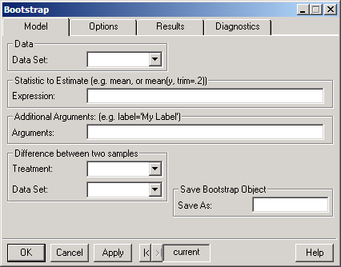
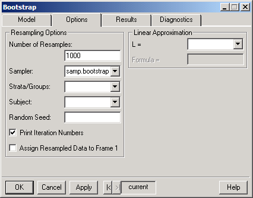
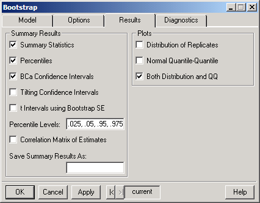
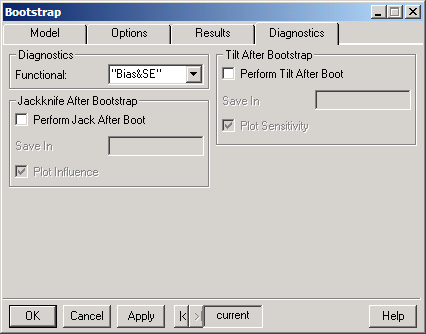

choose Statistics
 Resample
Bootstrap.
The dialog shown below appears.
Resample
Bootstrap.
The dialog shown below appears.S+Resample GUI Reference
|
In statistical analysis, the researcher is usually interested in obtaining not only a point estimate of a statistic but also an estimate of the variation in this point estimate and a confidence interval for the true value of the parameter. For example, a researcher may calculate not only a sample mean but also the standard error of the mean and a confidence interval for the mean.
The traditional methods for calculating confidence intervals generally rely upon a statistic, or some known transformation of it, being normally distributed. If this normality assumption does not hold, the traditional methods may be inaccurate. They also require standard errors, which may be difficult to obtain.
The bootstrap provides estimates of the standard error, confidence intervals, and distributions for (almost) any statistic. To use these procedures, you must supply the name of the data set under examination and an S-PLUS function or expression that calculates the statistic of interest.
The Bootstrap dialog performs bootstrap inferences for a specified statistic and data set. See the S-PLUS Resample Library User's Guide and Guide to Statistics for details.
To perform bootstrap inference,
choose
Statistics
Resample
Bootstrap.
The dialog shown below appears.
Model page
 Click
individual fields in the dialog below for more specific information.
Click
individual fields in the dialog below for more specific information.

For additional details on the Data and Statistic fields see Data and Statistic Details.
Options page
Click
individual fields in the dialog below for more specific information.

Results page
Click
individual fields in the dialog below for more specific information.

Diagnostic page
Click
individual fields in the dialog below for more specific information.

Related programming language functions:
bootstrap, influence, jackknifeAfterBootstrap limits.bca, limits.t, limits.tilt, plot.resamp, qqnorm.resamp, resampGetL, summary.bootstrap, tiltAfterBootstrap